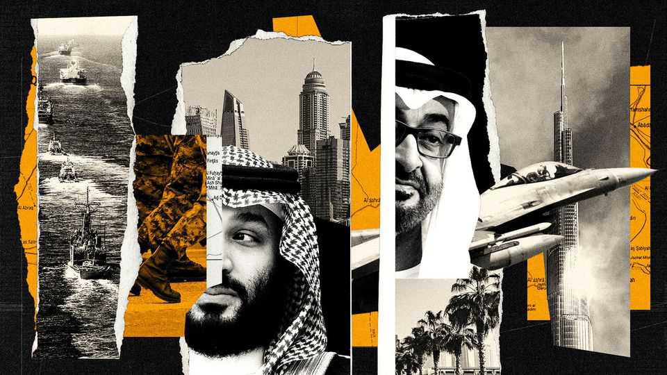

With Iran emboldened, its neighbours must put old divisions aside
With a common foe, they cannot afford petty feuds
June 25th 2026

GULF RULERS are no strangers to disruption. The region’s petrostates prospered from an oil shock in 1973. The revolution in Iran, six years later, led most of them to seek American protection. The recent war against Iran was unsettling, too. But, as Donald Trump offers remarkably generous peace terms, the post-war dealmaking alarms them even more. The next months will see old certainties upended. How can the region cope?
The Gulf is not only the world’s most important petrol station. Its airports are also global hubs for passenger travel, cargo and other logistics. Its financial centres are gaining increasing clout. Many wealthy expats have become hooked on low taxes and brilliant sunshine. But all that requires a bubble of security in an otherwise unstable region.
Iran threatens to pop it. It now has a chokehold over the Strait of Hormuz and expects to levy fees, perhaps disguised as compulsory insurance charges, on tankers that pass through it. Iran could earn billions of dollars a year from this. The efforts of consuming countries to wean their economies off oil could also pose a problem for the Gulf states.
What to do? The Gulf states know they are at risk. America may have helped fend off many Iranian missiles and drones in the latest conflict, but the superpower is impatient and looks ever less reliable as a security provider. So Gulf states must learn to take more into their own hands. Crucially, that means finding ways to work together, without always waiting for America to corral them.
Most urgent is more defence co-operation. In recent years Gulf states have individually spent lavishly on military hardware, but none could ward off Iran’s attacks without help. Even the United Arab Emirates (uae), with its impressive and sophisticated air- and missile-defences, had to turn to France and South Korea. Israel hurriedly dispatched an Iron Dome battery to bolster Emirati defences.
America has long prodded its Gulf allies’ armed forces to work more with each other. They have resisted, but can no longer afford their mutual mistrust. Sharing more data from sensors and working to identify and fill gaps in coverage would be a good start. One urgent need is to build a new acoustic-sensor layer for regional air-defences, as Ukraine has done, to allow earlier detection of drones. Ukraine has already signalled it would be a willing supplier of kit and advisers.
Then there is infrastructure. Gulf countries must swiftly develop alternatives to the Strait of Hormuz. The more oil and gas they can export through other routes, for example via new underground pipelines towards the Red Sea or the Mediterranean, the weaker Iran’s economic grip will become. Countries that co-operate, allowing their neighbours to make use of their ports and building stronger road and rail networks across political borders, will be more resilient when they are threatened again. Their goal, in time, must be to make Iran’s control of Hormuz a wasting asset.
All this is only a first step, and it requires a painful strategic shift: overcoming bitter rivalries in foreign policy, especially between the Saudis and Emiratis, who each believe they should be the regional leaders. Their deadly meddling, in Yemen and in the Horn of Africa, has been a self-harming distraction. To have any hope of uniting against the common threat of Iran, the Gulf states must put aside their dangerous competition for influence elsewhere. Sadly, instead, those rivalries seem to be hardening.
Only a more unified Gulf has a chance of protecting itself from Iranian aggression, just as Europe is trying to find ways to contain threats from Russia. No one thinks it will be easy for the Saudis and Emiratis to end their feud. That is all the more reason to start now. ■
Subscribers to The Economist can sign up to our Opinion newsletter, which brings together the best of our leaders, columns, guest essays and reader correspondence.